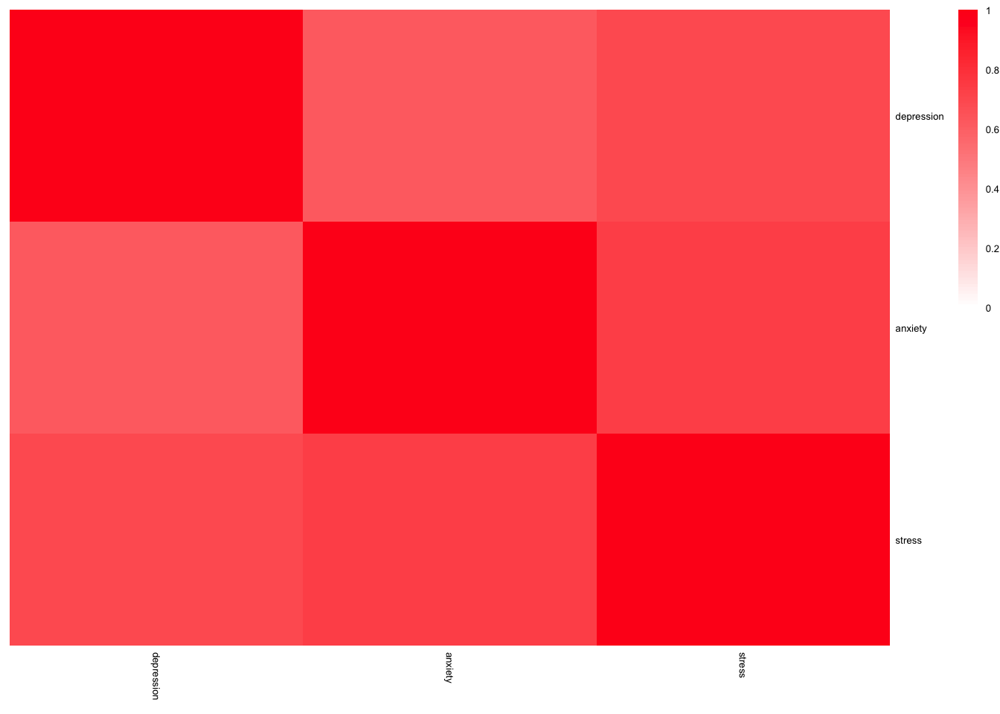

DASS-42 Responses
Our group applied the dataset from Kaggle Depression, Anxiety, and Stress Scales Responses (can be find here) for this project. The DASS-42 is a self-report scale consisting of 42 items intended to gauge emotional states related to depression, anxiety, and stress. The primary benefit of utilizing the DASS in a clinical context is its ability to ascertain the specific location of emotional turmoil, contributing to a more comprehensive clinical assessment. Its core function is to evaluate the severity of the fundamental symptoms associated with depression, anxiety, and stress.
# Load the dataset
dass_raw = read.csv("./data/data.csv", sep = "\t")The raw data contain 39775 observations and 172 variables, where contains the information of the participants’ responses.
As we mentioned before, the raw data contains the basic information from the responses. Based on codebook.txt from Kaggle, we checked whether the individual response is meaningful. The criteria are as follow:
The survey includes an accuracy check section, which provides
several word spelling questions to check whether participants had filled
out the questionnaire carefully.
VCL6,VCL9,VCL12 represents words
that not exist. If the participants chose 1 in any of these three
questions, the response could be omit.
The raw data contains different missing values which needs to be
omitted. Specifically, country variable has “NONE” as the
missing value.
Age variable have impossible values we need to clean
out. For example, 299 years for an age is not reasonable.
# kick out meaningless observation
dass = dass_raw %>%
filter(!(VCL6 == 1 | VCL9 == 1 | VCL12 == 1)) %>%
filter(!country == "NONE") %>%
filter(age <= 100)
dass = dass %>%
dplyr::select(matches('Q\\d+A'), country, education, urban, gender, age, religion, orientation, race, married) %>%
na.omit()Since we observed that there are some variables have actual meaning
corresponding to the original numeric value, we refactor these
variables, including education, urban,
gender, religion, orientation,
race, married. In these variables, if the
value is 0, it represents missing value and we delete these
observations.
# refactor the variables
dass_new = dass %>%
mutate(
education = case_when(education == 1 ~ 'Less than high school',
education == 2 ~ 'High school',
education == 3 ~ 'University degree',
education == 4 ~ 'Graduate degree'),
urban = case_when(urban == 1 ~ 'Rural',
urban == 2 ~ 'Suburban',
urban == 3 ~ 'Urban'),
gender = case_when(gender == 1 ~ 'Male',
gender == 2 ~ 'Female',
gender == 3 ~ 'Other'),
religion = case_when(religion == 1 ~ 'Agnostic',
religion == 2 ~ 'Atheist',
religion == 3 ~ 'Buddhist',
religion == 4 ~ 'Christian (Catholic)',
religion == 5 ~ 'Christian (Mormon)',
religion == 6 ~ 'Christian (Protestant)',
religion == 7 ~ 'Christian (Other)',
religion == 8 ~ 'Hindu',
religion == 9 ~ 'Jewish',
religion == 10 ~ 'Muslim',
religion == 11 ~ 'Sikh',
religion == 12 ~ 'Other'),
orientation = case_when(orientation == 1 ~ 'Heterosexual',
orientation == 2 ~ 'Bisexual',
orientation == 3 ~ 'Homosexual',
orientation == 4 ~ 'Asexual',
orientation == 5 ~ 'Other'),
race = case_when(race == 10 ~ 'Asian',
race == 20 ~ 'Arab',
race == 30 ~ 'Black',
race == 40 ~ 'Indigenous Australian',
race == 50 ~ 'Native American',
race == 60 ~ 'White',
race == 70 ~ 'Other'),
married = case_when(married == 1 ~ 'Never married',
married == 2 ~ 'Currently married',
married == 3 ~ 'Previously married')
) %>%
na.omit()Based on the scoring criteria, we add up the values for Q3A, Q5A, Q10A, Q13A, Q16A, Q17A, Q21A, Q24A, Q26A, Q31A, Q34A, Q37A, Q38A and Q42A as the depression scores. Similarly, add up the values for Q2A, Q4A, Q7A, Q9A, Q15A, Q19A, Q20A, Q23A, Q25A, Q28A, Q30A, Q36A, Q40A and Q41A as the anxiety scores and the sum of Q1A, Q6A, Q8A, Q11A, Q12A, Q14A, Q18A, Q22A, Q27A, Q29A, Q32A, Q33A, Q35A and Q39A as the stress scores. Considering that the scoring criteria we refer to is 0-3 scale but Kaggle dataset is 1-4 scale, we modify these three scores by minus 14.
After that, we could assign depression level, anxiety level and stress level for each observation refer to the rule of:
Depression
0 - 9 normal
10 - 13 mild
14 - 20 moderate
21 - 27 severe
>27 extremely severe
Anxiety
0 - 7 normal
8 - 9 mild
10 - 14 moderate
15 - 19 severe
>19 extremely severe
Stress
0 - 14 normal
15 - 18 mild
19 - 25 moderate
26 - 33 severe
>33 extremely severe
Considering that stress, anxiety and depression might have
correlations, we apply correlation test for stress_level,
depression_level, anxiety_level.
dass_heat2 <- dass %>%
mutate(
depression = Q3A + Q5A + Q10A + Q13A + Q16A + Q17A + Q21A + Q24A + Q26A + Q31A + Q34A + Q37A + Q38A + Q42A - 14,
anxiety = Q2A + Q4A + Q7A + Q9A + Q15A + Q19A + Q20A + Q23A + Q25A + Q28A + Q30A + Q36A + Q40A + Q41A - 14,
stress = Q1A + Q6A + Q8A + Q11A + Q12A + Q14A + Q18A + Q22A + Q27A + Q29A + Q32A + Q33A + Q35A + Q39A - 14
) %>%
mutate(depression = case_when(
depression >= 0 & depression <= 9 ~ 0,
depression >= 10 & depression <= 13 ~ 1,
depression >= 14 & depression <= 20 ~ 2,
depression >= 21 & depression <= 27 ~ 3,
depression >= 28 ~ 4
)) %>%
mutate(anxiety = case_when(
anxiety >= 0 & anxiety <= 7 ~ 0,
anxiety >= 8 & anxiety <= 9 ~ 1,
anxiety >= 10 & anxiety <= 14 ~ 2,
anxiety >= 15 & anxiety <= 19 ~ 3,
anxiety >= 20 ~ 4
)) %>%
mutate(stress = case_when(
stress >= 0 & stress <= 14 ~ 0,
stress >= 15 & stress <= 18 ~ 1,
stress >= 19 & stress <= 25 ~ 2,
stress >= 26 & stress <= 33 ~ 3,
stress >= 34 ~ 4
)) %>%
dplyr::select(depression,anxiety,stress)
r1 <- cor(dass_heat2,
method = "pearson",
use = "pairwise.complete.obs"
)
pheatmap(r1,
show_colnames = TRUE,
show_rownames=TRUE,
fontsize=5,
color = colorRampPalette(c('#ffffff','#ff0000'))(100),
annotation_legend=TRUE,
border_color=NA,
scale="none",
cluster_rows = F,
cluster_cols = F,
breaks = seq(0, 1, length.out = 90)
)
According to the heat map, we could conclude that these three variables have strong correlation. Therefore, in our project, we take depression_level as the representative.
Finally, we get our clean and tidy dataset for the project.
# create three different dataset
dass_new = dass_new %>%
mutate(
depression = Q3A + Q5A + Q10A + Q13A + Q16A + Q17A + Q21A + Q24A + Q26A + Q31A + Q34A + Q37A + Q38A + Q42A - 14
) %>%
mutate(education = factor(education, levels = c('Less than high school', 'High school', 'University degree', 'Graduate degree'))) %>%
mutate(married = factor(married, levels = c("Previously married", "Currently married", "Never married"))) %>%
dplyr::select(-matches('Q\\d+A'))
# create das level variables
dass_new = dass_new %>%
mutate(depression_level = case_when(
depression >= 0 & depression <= 9 ~ 'Normal',
depression >= 10 & depression <= 13 ~ 'Mild',
depression >= 14 & depression <= 20 ~ 'Moderate',
depression >= 21 & depression <= 27 ~ 'Severe',
depression >= 28 ~ 'Extremely severe'
)) %>%
mutate(depression_level = factor(depression_level, c("Normal","Mild","Moderate","Severe","Extremely severe"))) %>%
dplyr::select(-depression)
head(dass_new)## country education urban gender age religion
## 1 IN High school Urban Female 16 Other
## 3 PL High school Urban Female 17 Christian (Catholic)
## 4 US Less than high school Urban Female 13 Christian (Catholic)
## 5 MY University degree Suburban Female 19 Muslim
## 6 US High school Urban Female 20 Christian (Catholic)
## 7 MX High school Urban Female 17 Christian (Other)
## orientation race married depression_level
## 1 Heterosexual Asian Never married Severe
## 3 Homosexual White Never married Extremely severe
## 4 Other Other Never married Moderate
## 5 Heterosexual Asian Never married Extremely severe
## 6 Heterosexual Other Never married Mild
## 7 Bisexual White Never married Extremely severeAbove all, we got our dataset for further analysis. It contains 30309 observations and 10 variables. The explanation of each variables are listed below:
country: The country where the participants
from.
education: The education level of the
participants.
urban: The urban level of the place where
participants live.
gender: The sex of the participants.
religion: The religion which the participants belong
to.
orientation: The sexual orientation of the
participants.
race: The race of participants.
married: The marriage status of
participants.
age: The age when participants response the
survey.
depression_level: The depression level of the
participants according to the survey and scores.
dass_new %>%
dplyr::select(-country) %>%
tbl_summary(type = list(
education ~ "categorical",
urban ~ "categorical",
gender ~ "categorical",
religion ~ "categorical",
orientation ~ "categorical",
race ~ "categorical",
married ~ "categorical",
age ~ "continuous",
depression_level ~ "categorical"
),
statistic = list(all_continuous() ~ "{mean} ({sd})"),
digits = all_continuous() ~ 1,
label = c(
education = "Education level",
urban = "Urban level",
gender = "Gender",
religion = "Religion",
orientation = 'Sexual orientation',
race = 'Race',
married = 'Marriage status',
age = "Age (Years)",
depression_level = "Depression level"
)) %>%
bold_labels() %>%
as_gt() # Display the table as a gt object| Characteristic | N = 30,3091 |
|---|---|
| Education level | |
| Less than high school | 2,997 (9.9%) |
| High school | 11,374 (38%) |
| University degree | 11,957 (39%) |
| Graduate degree | 3,981 (13%) |
| Urban level | |
| Rural | 6,295 (21%) |
| Suburban | 10,283 (34%) |
| Urban | 13,731 (45%) |
| Gender | |
| Female | 23,137 (76%) |
| Male | 6,754 (22%) |
| Other | 418 (1.4%) |
| Age (Years) | 23.5 (8.4) |
| Religion | |
| Agnostic | 2,406 (7.9%) |
| Atheist | 2,943 (9.7%) |
| Buddhist | 419 (1.4%) |
| Christian (Catholic) | 2,359 (7.8%) |
| Christian (Mormon) | 83 (0.3%) |
| Christian (Other) | 1,699 (5.6%) |
| Christian (Protestant) | 1,177 (3.9%) |
| Hindu | 531 (1.8%) |
| Jewish | 101 (0.3%) |
| Muslim | 17,204 (57%) |
| Other | 1,343 (4.4%) |
| Sikh | 44 (0.1%) |
| Sexual orientation | |
| Asexual | 1,649 (5.4%) |
| Bisexual | 3,921 (13%) |
| Heterosexual | 20,259 (67%) |
| Homosexual | 1,548 (5.1%) |
| Other | 2,932 (9.7%) |
| Race | |
| Arab | 228 (0.8%) |
| Asian | 18,041 (60%) |
| Black | 432 (1.4%) |
| Indigenous Australian | 12 (<0.1%) |
| Native American | 159 (0.5%) |
| Other | 3,621 (12%) |
| White | 7,816 (26%) |
| Marriage status | |
| Previously married | 771 (2.5%) |
| Currently married | 3,331 (11%) |
| Never married | 26,207 (86%) |
| Depression level | |
| Normal | 6,832 (23%) |
| Mild | 2,921 (9.6%) |
| Moderate | 5,433 (18%) |
| Severe | 4,947 (16%) |
| Extremely severe | 10,176 (34%) |
| 1 n (%); Mean (SD) | |